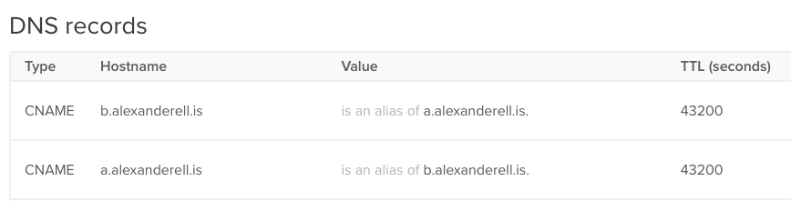
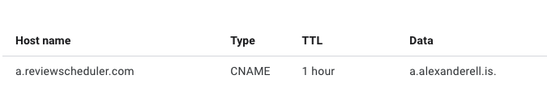
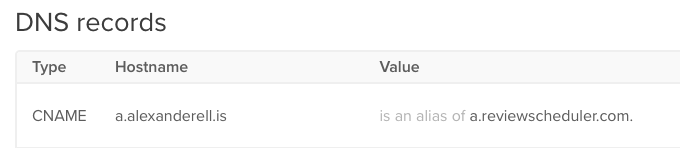

What happens if you point two CNAMEs at each other? Not much, really
Digging through the dig to see what happened
Aug 14, 2022 · 2600 words · 13 minutes read
I dabble with DNS for work, and I’m frequently checking if CNAMEs are properly
configured. CNAMEs are Canonical NAMEs, kind of like nicknames, that indicate
that one domain name is a nickname for another domain name. For example, you
probably encounter CNAMEs that map from the classic www subdomain:
www.example.com CNAME example.com
This entry indicates that example.com is the Canonical NAME for
www.example.com. When you go to www.example.com, your DNS resolver sees this
entry and looks up the right side instead, example.com, which then (hopefully)
resolves to the actual destination. This is pretty neat, and it can be handy for
doing all sorts of interesting things with subdomains.
If you aren’t familiar with CNAMEs or DNS, I’d highly, highly recommend Julia Evans’ How DNS Works! Zine.
I was thinking about CNAMEs the other day and a silly question popped into my head: if CNAMEs are used to define domain names that are the canonical names for other domain names, what if we defined another CNAME that just pointed back to the first? What if there was a cycle?

TL;DR nothing terribly exciting happens. They thought about this back in 1993.
We can see what this looks like with a quick dig:
blog: $ dig a.alexanderell.is
; <<>> DiG 9.10.6 <<>> a.alexanderell.is
;; global options: +cmd
;; Got answer:
;; ->>HEADER<<- opcode: QUERY, status: SERVFAIL, id: 29976
;; flags: qr rd ra; QUERY: 1, ANSWER: 0, AUTHORITY: 0, ADDITIONAL: 1
;; OPT PSEUDOSECTION:
; EDNS: version: 0, flags:; udp: 512
;; QUESTION SECTION:
;a.alexanderell.is. IN A
;; Query time: 172 msec
;; SERVER: 2001:558:feed::1#53(2001:558:feed::1)
;; WHEN: Sun Aug 14 21:36:47 EDT 2022
;; MSG SIZE rcvd: 46
Well that’s not very exciting. There was a SERVFAIL on the query.
What does the full query look like starting from the root servers?
(Feel free to skip to the end of the output, where I walk through it query by query).
blog: $ dig +trace +all a.alexanderell.is
; <<>> DiG 9.10.6 <<>> +trace +all a.alexanderell.is
;; global options: +cmd
;; Got answer:
;; ->>HEADER<<- opcode: QUERY, status: NOERROR, id: 45480
;; flags: qr ra ad; QUERY: 1, ANSWER: 14, AUTHORITY: 0, ADDITIONAL: 27
;; OPT PSEUDOSECTION:
; EDNS: version: 0, flags: do; udp: 512
;; QUESTION SECTION:
;. IN NS
;; ANSWER SECTION:
. 483007 IN NS c.root-servers.net.
. 483007 IN NS d.root-servers.net.
. 483007 IN NS e.root-servers.net.
. 483007 IN NS f.root-servers.net.
. 483007 IN NS g.root-servers.net.
. 483007 IN NS h.root-servers.net.
. 483007 IN NS i.root-servers.net.
. 483007 IN NS j.root-servers.net.
. 483007 IN NS k.root-servers.net.
. 483007 IN NS l.root-servers.net.
. 483007 IN NS m.root-servers.net.
. 483007 IN NS a.root-servers.net.
. 483007 IN NS b.root-servers.net.
. 483007 IN RRSIG NS 8 0 518400 20220827050000 20220814040000 20826 . oQpyr4pIhGLgcV1GUSYSasiMsvbkTkZ6ZkXyjDQsA5nMob/9YnXX7gAX aTODvODzX68dG6au5/lFHkuH+gbbatHMNQfLND9B1Fah2UVVRKkd10N/ UVCoh4QE3g8ktWvdBriKUfgPC/0iizk1mx/vS0I8M1n9ey9zN8r+vkfd i9izcHE7sX6OCe5OaTTILMDbBZPSp6fJ9Idci3iToPJ3Y23esRanMEqp 0aY2UNpf/oFYW8u/PduugJmyfvp4WZ1lqvWCxx43oSVI/b9QVG9o08Hr 6dQOFmYa7mui65nP7kFW/lWvwP43lNHdpFOu7L9KCzZOenEAT3lTXMUA b7+4fQ==
;; ADDITIONAL SECTION:
a.root-servers.net. 313522 IN A 198.41.0.4
a.root-servers.net. 313582 IN AAAA 2001:503:ba3e::2:30
b.root-servers.net. 313628 IN A 199.9.14.201
b.root-servers.net. 313558 IN AAAA 2001:500:200::b
c.root-servers.net. 313615 IN A 192.33.4.12
c.root-servers.net. 313577 IN AAAA 2001:500:2::c
d.root-servers.net. 313623 IN A 199.7.91.13
d.root-servers.net. 313621 IN AAAA 2001:500:2d::d
e.root-servers.net. 313720 IN A 192.203.230.10
e.root-servers.net. 313578 IN AAAA 2001:500:a8::e
f.root-servers.net. 313629 IN A 192.5.5.241
f.root-servers.net. 313544 IN AAAA 2001:500:2f::f
g.root-servers.net. 314027 IN A 192.112.36.4
g.root-servers.net. 313600 IN AAAA 2001:500:12::d0d
h.root-servers.net. 313616 IN A 198.97.190.53
h.root-servers.net. 313577 IN AAAA 2001:500:1::53
i.root-servers.net. 313614 IN A 192.36.148.17
i.root-servers.net. 313614 IN AAAA 2001:7fe::53
j.root-servers.net. 313614 IN A 192.58.128.30
j.root-servers.net. 313561 IN AAAA 2001:503:c27::2:30
k.root-servers.net. 313615 IN A 193.0.14.129
k.root-servers.net. 313561 IN AAAA 2001:7fd::1
l.root-servers.net. 313617 IN A 199.7.83.42
l.root-servers.net. 313617 IN AAAA 2001:500:9f::42
m.root-servers.net. 313517 IN A 202.12.27.33
m.root-servers.net. 313515 IN AAAA 2001:dc3::35
;; Query time: 22 msec
;; SERVER: 2001:558:feed::1#53(2001:558:feed::1)
;; WHEN: Sun Aug 14 21:41:50 EDT 2022
;; MSG SIZE rcvd: 1097
;; Got answer:
;; ->>HEADER<<- opcode: QUERY, status: NOERROR, id: 4649
;; flags: qr; QUERY: 1, ANSWER: 0, AUTHORITY: 8, ADDITIONAL: 13
;; OPT PSEUDOSECTION:
; EDNS: version: 0, flags: do; udp: 1232
;; QUESTION SECTION:
;a.alexanderell.is. IN A
;; AUTHORITY SECTION:
is. 172800 IN NS sunic.sunet.se.
is. 172800 IN NS durinn.rhnet.is.
is. 172800 IN NS bes.isnic.is.
is. 172800 IN NS tg-tldsecondary01.isnic.is.
is. 172800 IN NS ht-tldsecondary01.isnic.is.
is. 172800 IN NS sab.isnic.is.
is. 86400 IN DS 179 8 2 D45BB61D3BC69EF89B877439444854151B3EC3A2A9E3E740A3D89DBB 5B5CD15B
is. 86400 IN RRSIG DS 8 1 86400 20220827170000 20220814160000 20826 . KYXFNCkA+RqpWwEnNH/dpCVdTCQ5b51nU9bFighuq7OkG9LKQS4esY6z hpFfpTkeZSOPXeVQV6Ijyw/T4egEFFkpD3yst5kroHcHNwsoQJ9VTX8R 5b9Y/VVO1KSDWRHz1ImReHA+FyndqWOv+vCvfSIDc4ntdMdq7xpbjsjH HqsgslYdn+5yyb1Y/O4ioMyPfC0W2bCmmUwiwpazZBXmwAFHyYhtVMSb vCEX4DwshK6q3QrN86o/PC33xdMJB84bXSSvd7vqRylNOcMVoy9T6l6u eBWi50XccRv58GUB/WHO3CwF9quMtw/qTe9hhF0hax0HpDUJzDxRW/dD k42EvA==
;; ADDITIONAL SECTION:
tg-tldsecondary01.isnic.is. 172800 IN A 185.93.156.154
ht-tldsecondary01.isnic.is. 172800 IN A 185.93.156.10
durinn.rhnet.is. 172800 IN A 130.208.16.20
sunic.sunet.se. 172800 IN A 192.36.125.2
sab.isnic.is. 172800 IN A 194.146.106.58
bes.isnic.is. 172800 IN A 204.61.216.116
tg-tldsecondary01.isnic.is. 172800 IN AAAA 2001:67c:6c:f056::154
ht-tldsecondary01.isnic.is. 172800 IN AAAA 2001:67c:6c:56::10
durinn.rhnet.is. 172800 IN AAAA 2a00:c88:10:16::20
sunic.sunet.se. 172800 IN AAAA 2001:6b0:7::2
sab.isnic.is. 172800 IN AAAA 2001:67c:1010:14::53
bes.isnic.is. 172800 IN AAAA 2001:500:14:6116:ad::1
;; Query time: 90 msec
;; SERVER: 202.12.27.33#53(202.12.27.33)
;; WHEN: Sun Aug 14 21:41:50 EDT 2022
;; MSG SIZE rcvd: 812
;; Got answer:
;; ->>HEADER<<- opcode: QUERY, status: NOERROR, id: 4229
;; flags: qr; QUERY: 1, ANSWER: 0, AUTHORITY: 5, ADDITIONAL: 1
;; OPT PSEUDOSECTION:
; EDNS: version: 0, flags: do; udp: 1232
;; QUESTION SECTION:
;a.alexanderell.is. IN A
;; AUTHORITY SECTION:
alexanderell.is. 86400 IN NS ns3.digitalocean.com.
alexanderell.is. 86400 IN NS ns1.digitalocean.com.
alexanderell.is. 86400 IN NS ns2.digitalocean.com.
ffmia098sr21vlstesk9tcas3o8r2kbi.is. 1800 IN NSEC3 1 0 0 - FFN0KB1I2OUM49H3U27J2Q5TIJ2ID6U9 NS
ffmia098sr21vlstesk9tcas3o8r2kbi.is. 1800 IN RRSIG NSEC3 8 2 1800 20220823181002 20220809164002 27694 is. jAg9RbYPjOHbxBPjJaBe9v2/y1A8h8mBHXzvliihyXw/ZPJa7nFA2q/O rdmYNgHMbF25qePTv0lQXsohVHXcvTxCY6lVND0YDu3FfsQ2zdfBSpzz wOq2mUogLduIAavbx6EmNow4nvbGR4Lg3aiFVjVI+l9ra8WVrPWrOf62 wx6JfezdbXNimgRMRVn8ndSHvJPSQfyRpAjjxiAa4WQqfqRuPujSNOjD IwGk6k2hfTambCbDHXY5QKOPoE0fVAXtCKS4YbcJlIgI6m/POE1Pz92Y kK223LnTTPQULyeuzd57V1imk6gKDtH4SiW2KhuxsuUhzq3ZryWSHHwu 0DtE4Q==
;; Query time: 117 msec
;; SERVER: 2001:67c:6c:56::10#53(2001:67c:6c:56::10)
;; WHEN: Sun Aug 14 21:41:51 EDT 2022
;; MSG SIZE rcvd: 482
;; Got answer:
;; ->>HEADER<<- opcode: QUERY, status: SERVFAIL, id: 28117
;; flags: qr; QUERY: 1, ANSWER: 0, AUTHORITY: 0, ADDITIONAL: 1
;; OPT PSEUDOSECTION:
; EDNS: version: 0, flags: do; udp: 512
;; QUESTION SECTION:
;a.alexanderell.is. IN A
;; Query time: 97 msec
;; SERVER: 198.41.222.173#53(198.41.222.173)
;; WHEN: Sun Aug 14 21:41:51 EDT 2022
;; MSG SIZE rcvd: 46
The dig output can look gnarly, but let’s break this down. dig is
recursively asking “Where do I find this domain?”, starting with the root
servers and asking the DNS server in the answer. You can imagine it walking down
a tree of DNS servers as they get more and more specific for the domain in
question.
You can see the first request in the first QUESTION SECTION: . IN NS, or
“I’m looking for any domain. Who are the root servers?”. This query did fine,
and it returned the root servers and where to find them.
;; Got answer:
;; ->>HEADER<<- opcode: QUERY, status: NOERROR, id: 45480
;; flags: qr ra ad; QUERY: 1, ANSWER: 14, AUTHORITY: 0, ADDITIONAL: 27
;; OPT PSEUDOSECTION:
; EDNS: version: 0, flags: do; udp: 512
;; QUESTION SECTION:
;. IN NS
;; ANSWER SECTION:
. 483007 IN NS m.root-servers.net.
... More root servers
;; ADDITIONAL SECTION:
m.root-servers.net. 313522 IN A 202.12.27.33
... where to find other root servers
The next question was to ask the root servers about this domain. We can see it
asked the server with the IP 202.12.27.33, which corresponds to
m.root-servers.net above. We asked it how to find a.alexanderell.is, and it
pointed us towards the .is TLD name servers (and a Swedish name server, see
the .se). Again we can see that there was no error, which makes sense.
;; Got answer:
;; ->>HEADER<<- opcode: QUERY, status: NOERROR, id: 4649
;; flags: qr; QUERY: 1, ANSWER: 0, AUTHORITY: 8, ADDITIONAL: 13
;; OPT PSEUDOSECTION:
; EDNS: version: 0, flags: do; udp: 1232
;; QUESTION SECTION:
;a.alexanderell.is. IN A
;; AUTHORITY SECTION:
is. 172800 IN NS sunic.sunet.se.
is. 172800 IN NS durinn.rhnet.is.
... More Icelandic servers
;; ADDITIONAL SECTION:
durinn.rhnet.is. 172800 IN A 130.208.16.20
sunic.sunet.se. 172800 IN A 192.36.125.2
;; Query time: 90 msec
;; SERVER: 202.12.27.33#53(202.12.27.33)
Next up, we can see the query to one of the .is TLD name servers,
2001:67c:6c:56::10, which corresponds to ht-tldsecondary01.isnic.is. It
responded with the DigitalOcean name servers, because I originally set up my
Icelandic hostname with them to point at a droplet, though I now just use
DigitalOcean for DNS things, though I probably don’t need them any more.
Regardless, again we see no error.
;; Got answer:
;; ->>HEADER<<- opcode: QUERY, status: NOERROR, id: 4229
;; flags: qr; QUERY: 1, ANSWER: 0, AUTHORITY: 5, ADDITIONAL: 1
;; OPT PSEUDOSECTION:
; EDNS: version: 0, flags: do; udp: 1232
;; QUESTION SECTION:
;a.alexanderell.is. IN A
;; AUTHORITY SECTION:
alexanderell.is. 86400 IN NS ns3.digitalocean.com.
... Other DigitalOcean name servers
;; Query time: 117 msec
;; SERVER: 2001:67c:6c:56::10#53(2001:67c:6c:56::10)
Finally, we can see the query to the DigitalOcean name server for this silly
setup. We got nothing back, other than a final result that there was a
SERVFAIL, which, as you may have guessed, means there was a failure on the
server.
;; Got answer:
;; ->>HEADER<<- opcode: QUERY, status: SERVFAIL, id: 28117
;; flags: qr; QUERY: 1, ANSWER: 0, AUTHORITY: 0, ADDITIONAL: 1
;; OPT PSEUDOSECTION:
; EDNS: version: 0, flags: do; udp: 512
;; QUESTION SECTION:
;a.alexanderell.is. IN A
;; Query time: 97 msec
;; SERVER: 198.41.222.173#53(198.41.222.173)
;; WHEN: Sun Aug 14 21:41:51 EDT 2022
;; MSG SIZE rcvd: 46
I think it’s pretty likely that the DigitalOcean name server started to look this up and quickly realized they were dealing with me, a fool, who pointed a CNAME to a CNAME that pointed back to the first CNAME. This seems like it could be a pretty basic cycle check, and it makes sense that they’re guarding against such cases.
What if we went outside of DigitalOcean?
Maybe the issue is that we’re giving the DigitalOcean name server too much freedom to squash our silly attempts. What if we split the CNAMEs across name servers? I just happened to have a Google domain for a side project I’ll get around to someday, and it’s pretty easy to point them at each other.
Google Domains DNS setup:

DigitalOcean DNS setup:

This is some seriously silly stuff right here. Giving this a shot, we can see that spreading these CNAMEs across two name servers made a difference, and we can now see both CNAME entries from a single dig:
blog: $ dig a.alexanderell.is
; <<>> DiG 9.10.6 <<>> a.alexanderell.is
;; global options: +cmd
;; Got answer:
;; ->>HEADER<<- opcode: QUERY, status: NOERROR, id: 58919
;; flags: qr rd ra; QUERY: 1, ANSWER: 2, AUTHORITY: 0, ADDITIONAL: 1
;; OPT PSEUDOSECTION:
; EDNS: version: 0, flags:; udp: 512
;; QUESTION SECTION:
;a.alexanderell.is. IN A
;; ANSWER SECTION:
a.alexanderell.is. 42393 IN CNAME a.reviewscheduler.com.
a.reviewscheduler.com. 3600 IN CNAME a.alexanderell.is.
;; Query time: 358 msec
;; SERVER: 2001:558:feed::1#53(2001:558:feed::1)
;; WHEN: Sun Aug 14 22:30:49 EDT 2022
;; MSG SIZE rcvd: 95
If you look at the traces (exercise left to the reader), you can see that there’s a little more going on under the hood, in particular what looks like proactive lookup ahead of time on Google’s side. Importantly though, these servers find that the end result is another CNAME pointing back to the original, and they go no further.
If we now try to curl one of these hosts, the DNS resolution times out after a while, as it’s now probably trying these CNAMEs back to back, looping as it makes futile attempts to resolve. Sorry, curl.
blog: $ curl -v a.alexanderell.is
... 30 seconds later
* Could not resolve host: a.alexanderell.is
* Closing connection 0
curl: (6) Could not resolve host: a.alexanderell.is
What does the DNS spec say?
If we go back to 1993, RFC 1536 explored some of these issues:
2. Recursion Bugs
When a server receives a client request, it first looks up its zone
data and the cache to check if the query can be answered. If the
answer is unavailable in either place, the server seeks names of
servers that are more likely to have the information, in its cache or
zone data. It then does one of two things. If the client desires the
server to recurse and the server architecture allows recursion, the
server chains this request to these known servers closest to the
queried name. If the client doesn't seek recursion or if the server
cannot handle recursion, it returns the list of name servers to the
client assuming the client knows what to do with these records.
The client queries this new list of name servers to get either the
answer, or names of another set of name servers to query. This
process repeats until the client is satisfied. Servers might also go
through this chaining process if the server returns a CNAME record
for the queried name. Some servers reprocess this name to try and get
the desired record type.
However, in certain cases, this chain of events may not be good. For
example, a broken or malicious name server might list itself as one
of the name servers to query again. The unsuspecting client resends
the same query to the same server.
In another situation, more difficult to detect, a set of servers
might form a loop wherein A refers to B and B refers to A. This loop
might involve more than two servers.
That’s us!
FIXES:
a. Set an upper limit on the number of referral links and CNAME
links you are willing to chase.
Note that this is not guaranteed to break only recursion loops.
It could, in a rare case, prune off a very long search path,
prematurely. We know, however, with high probability, that if
the number of links cross a certain metric (two times the depth
of the DNS tree), it is a recursion problem.
b. Watch out for self-referring servers. Avoid them whenever
possible.
c. Make sure you never pass off an authority NS record with your
own name on it!
d. Fix clients to accept iterative answers from servers not built
to provide recursion. Such clients should either be happy with
the non-authoritative answer or be willing to chase the
referral links themselves.
No surprises here — these all make sense as ways to defend. This does bring up another interesting question though: what’s the longest valid DNS chain we can make? Another exercise left to the reader.
What other things are out there?
I’m no expert on DNS servers (I’m more of an “application layer well after DNS” guy), but after a quick search, I found an interesting article about DNS loops and potential attack vectors, where they found a real-world example where NS record cycles led to a magnification of queries to the authoritative servers. In their words:
Last May, we publicly disclosed tsuNAME, a DNS vulnerability that could be exploited to mount DDoS attacks, where resolvers, clients and/or forwarders send endless queries to authoritative DNS servers. Although earlier RFCs have documented the existence of DNS name loops, none of them have fully addressed the problem. To fix that, we have proposed a new IETF draft to the DNS Operations Working Group (DNSOP WG).
From their technical report on tsuNAME:
On 2020-02-01, two domains (DomainA and DomainB) under .nz had their NS records misconfigured to be cyclically dependent. DomainANS records were pointed to ns[1,2].DomainB.nz, while DomainB NS records pointed to ns[1,2].DomainA.nz. This configuration error led to a 50% surge in query volume at .nz authoritative servers (Figure 1) . The .nz operators manually fixed this misconfiguration on 2020-02-17, after which the queries to return to normal levels
From the Emulating TSUNAME section, they describe recreating the issue with their own authoritative servers. They used probes to send ~18,000 DNS queries to their first hop resolvers, and those requests were eventually magnified to ~8,000,000 queries to the authoritative servers.
Recommend reading through the rest of the technical report if you’re curious — it’s pretty interesting stuff.
Glad I stopped at CNAMEs.